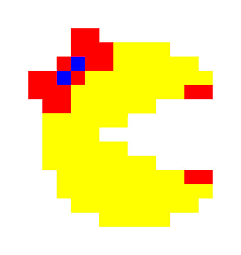

Lacman es un juego multijugador de equipos y de versión gratuita arcade en primera persona basado en navegador. Inspirado en el videojuego original PACMAN desarrollada y propiedad de Bandai Namco Entertainment.
Lacman es un videojuego divertido y novedoso en donde el ganador, es aquel que primero reúna las mayor cantidad de puntos en modo multijugador. 
El juego LACMAN usa el estándar WASD para moverse